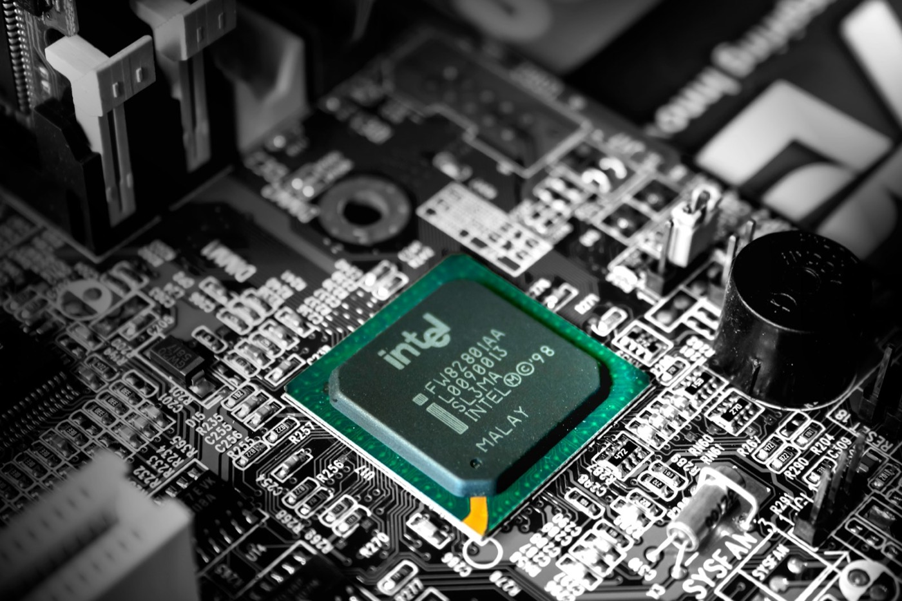
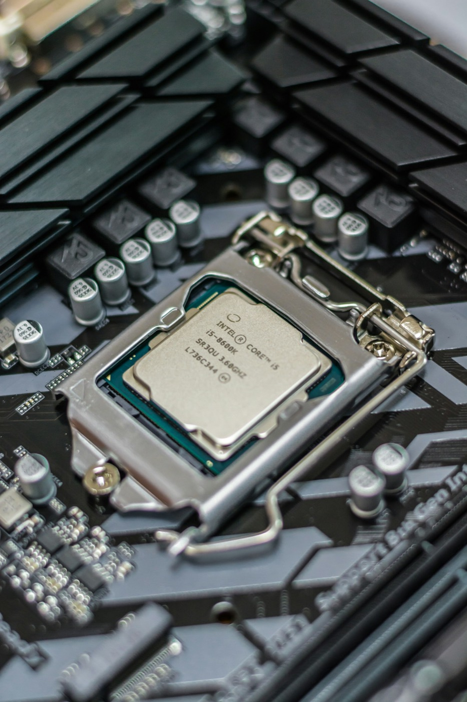
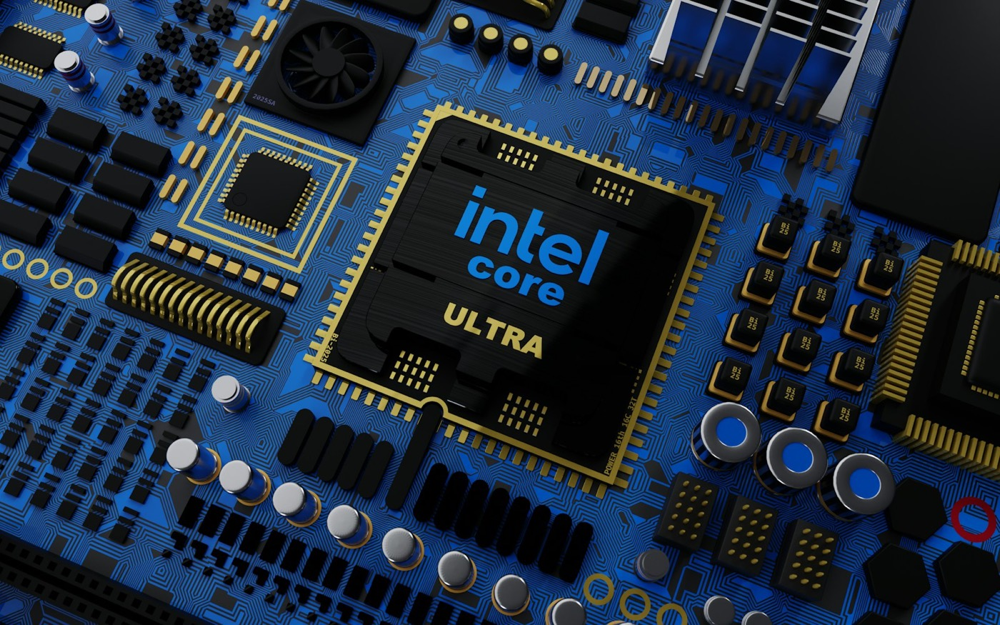
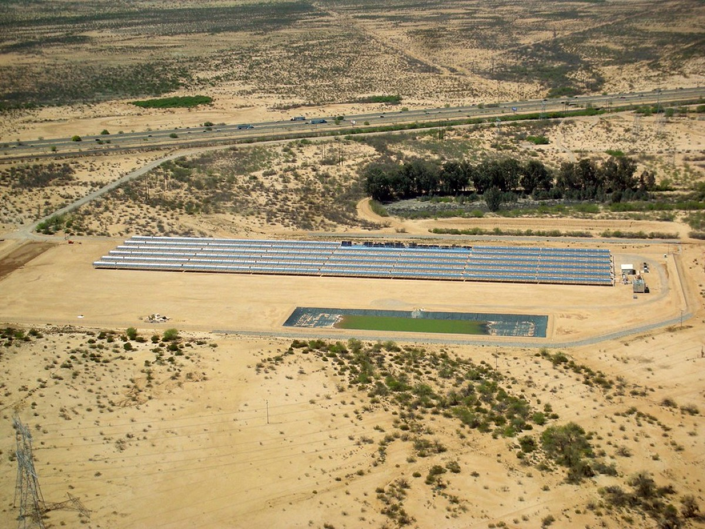
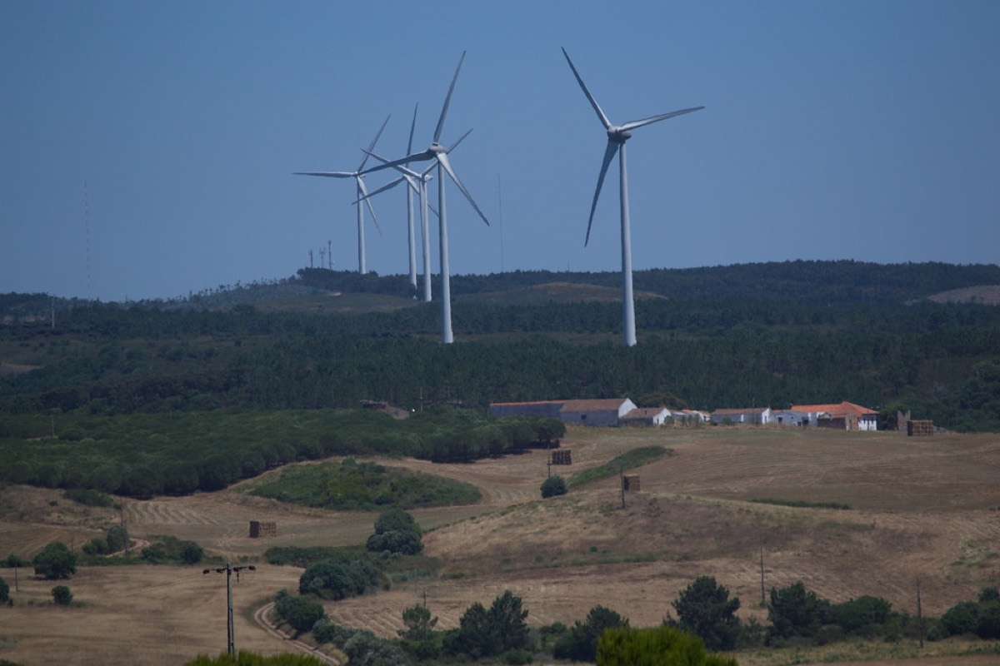
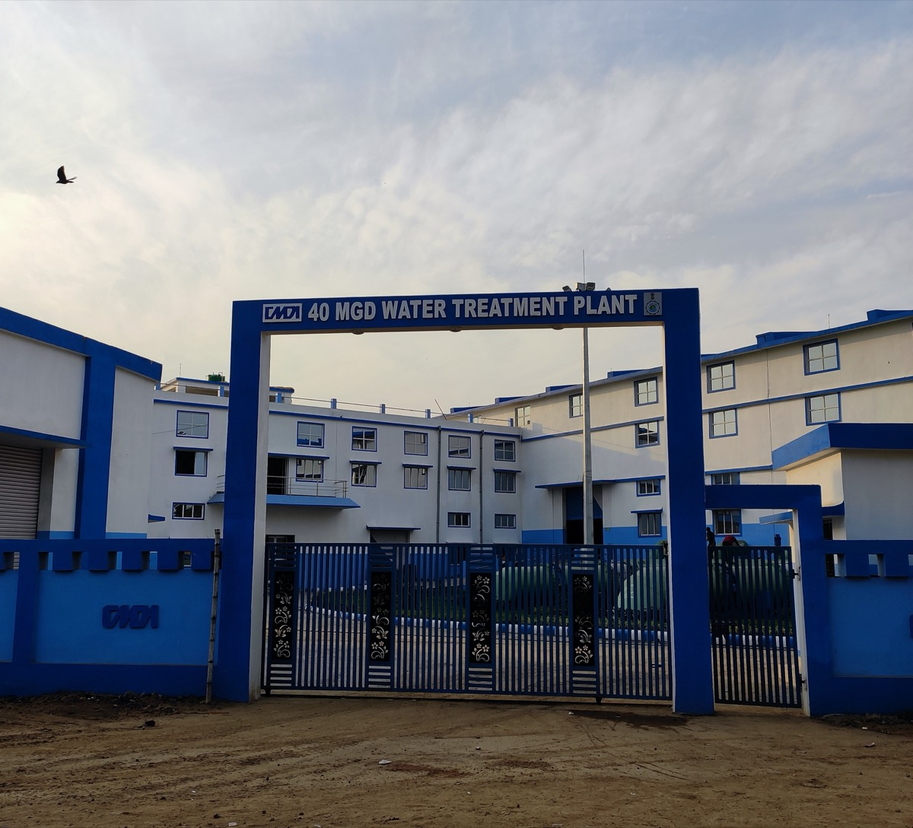
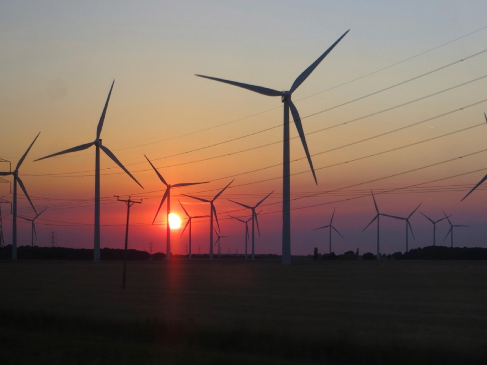

1968 — 2050
Six decades of milestones
-

1968 Intel is founded
Robert Noyce and Gordon Moore found Intel in Mountain View, California, beginning a company whose efficiency gains would later shape the energy footprint of computing worldwide.
-

1971 The first microprocessor
The Intel 4004 puts a complete CPU on a single chip. Integration is the original efficiency story: fewer parts, less material, and far less power for the same work.
-

2007 Lead-free processors
Intel goes 100% lead-free across its entire 45nm processor family, removing a hazardous heavy metal from products that ship by the hundreds of millions.
-

2008 Largest green power buyer
Intel becomes the largest voluntary purchaser of green power in the United States with a 1.3 billion kilowatt-hour commitment, and holds the top spot for years afterwards.
-

2020 The RISE strategy
Intel launches RISE — Responsible, Inclusive, Sustainable, Enabling — setting 2030 goals and committing to use its scale to move the wider technology industry, not just its own operations.
-

2030 Net positive water
Goals for the decade: 100% renewable electricity globally, net positive water, and zero total waste to landfill. Chip fabrication is water-intensive, which is exactly why returning more than is used matters.
-

2040 Net-zero operations
A commitment to net-zero greenhouse gas emissions across Intel’s own operations — Scope 1 and 2 — covering the factories and the electricity that runs them.
-
2050 Net-zero value chain
The hardest target: net-zero upstream emissions across suppliers and materials. Scope 3 is most of a chip company’s real footprint, and it cannot be reached alone.
Scroll or drag the bar to move through time · hover a card for the detail Scroll to move through time · tap a card for the detail